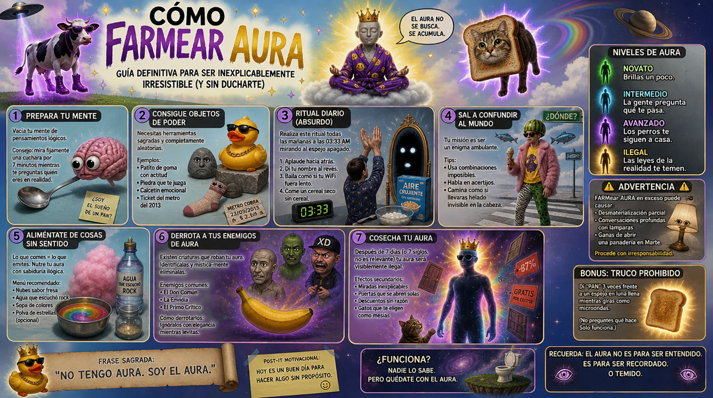
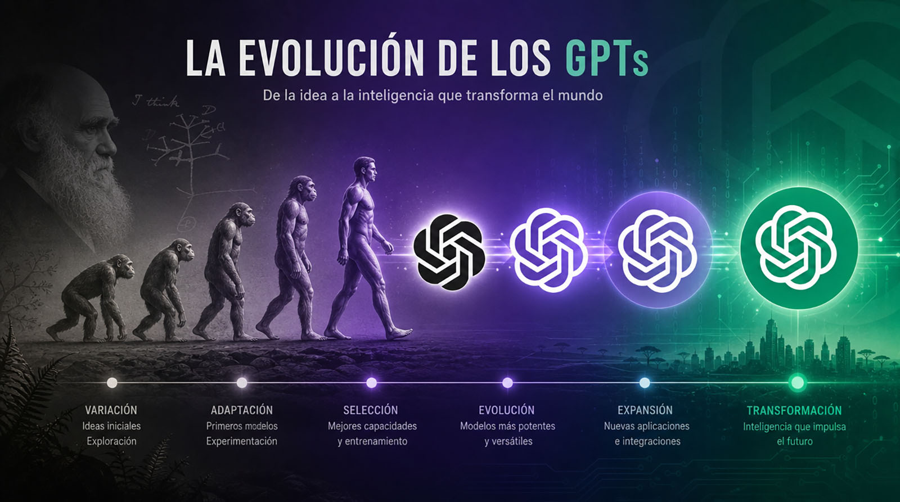
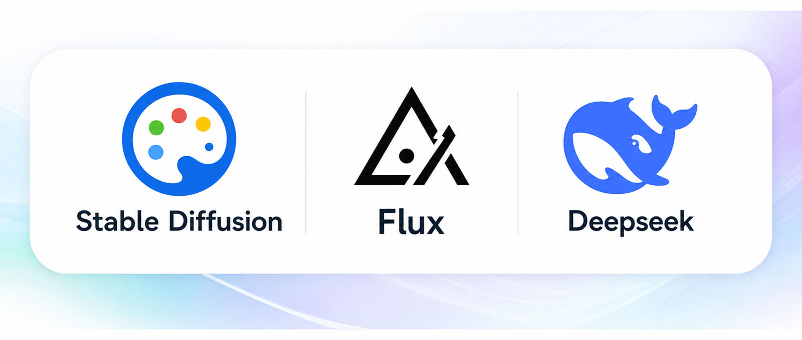

Clase 1
Introducción a la IA Generativa
La imaginación al poder: IA generativa y procesos creativos para la enseñanza universitaria — Docente: Diego Cagide
Bienvenida
Imagen representativa del curso
Se completa reemplazando images/01-imagen-curso.jpg
Maldita IA: ¿por qué un curso de capacitación?
1) Conocer al monstruo
2) Conocer las utilidades
3) Conocerla para no usarla
Bloque A — De qué hablamos cuando hablamos de IA generativa
La IA en el tiempo:
Recurso interactivo: línea de tiempo del desarrollo de la IA
Acá va el recurso elaborado en Genially. Cuando esté publicado, pegá el <iframe> de Genially justo debajo de esta línea (ver README.md) y borrá estas 3 líneas de "pendiente".
Imagen representativa: modelos de IA
Se completa reemplazando images/02-imagen-modelos-ia.jpg

🖼️Imagen de flyer típico creado con IA
Se completa reemplazando images/03-imagen-flyer-ia.jpg
Bloque B — Modelos y plataformas
La caja negra: ¿qué es un modelo?
Imagen representativa: de modelo
Se completa reemplazando images/04-imagen-modelo.jpg
¿Y la plataforma?
Imagen representativa de plataformas
Se completa reemplazando images/05-imagen-plataformas.jpg
El famoso caso del GPT y su Chat

🖼️Imagen representativa de los distintos modelos GPT
Se completa reemplazando images/06-imagen-modelos-gpt.jpg
Bloque C — Usos generales de la IA generativa
Usos generalmente admisibles
- Aclarar conceptos
- Organizar un plan de estudio
- Pedir preguntas de práctica
- Revisar gramática o claridad
- Solicitar ejemplos o analogías
Usos inadmisibles
- Entregar como propio un texto generado por IA
- Inventar citas o bibliografía
- Resolver evaluaciones no autorizadas con ayuda de IA
- Subir datos personales o materiales sensibles
- Usar IA para simular lectura que no se realizó
- Acompañar la ideación y el prototipado, explorando variaciones sobre una misma idea antes de decidir un rumbo definitivo.
- Generar referencias visuales personalizadas, como complemento de búsqueda en repositorios de imágenes.
- Modificar o adaptar materiales existentes: cambiar un fondo, extender una imagen, ajustar un color.
- Mejorar la resolución de piezas gráficas y audiovisuales.
- Agilizar la producción de piezas de comunicación, como flyers, videos cortos o piezas para redes.
La paradoja del conocimiento
Bloque D — Características, posibilidades y limitaciones de los modelos actuales
Un panorama de quién hace qué
Modelos privados vs. código abierto
Íconos de modelos privados
Se completa reemplazando images/07-iconos-modelos-privados.jpg

🖼️Íconos de modelos open source
Se completa reemplazando images/08-iconos-modelos-abiertos.jpg
Los límites: cuando el resultado no es tan confiable como parece
Algunos ejemplos frecuentes:
- Citar autores, títulos o fuentes que directamente no existen.
- Inventar datos técnicos —fechas, cifras, especificaciones— con total seguridad.
- Afirmar hechos históricos o biográficos parcial o totalmente falsos.
- Combinar información real proveniente de distintas fuentes de una manera que termina siendo incorrecta.
Algunos ejemplos frecuentes:
- Representar por defecto ciertas profesiones con un género determinado.
- Priorizar autores, perspectivas o referencias de determinadas regiones o tradiciones por sobre otras.
- Asociar ciertos estilos, estéticas o formas de hablar a determinados grupos sociales.
- Ofrecer resultados menos precisos para lenguas, nombres o contextos culturales poco representados en los datos de entrenamiento.
Cierre y para llevar al aula
- Establecer acuerdos de uso. Puede ser interesante delimitar en qué etapas de la cursada o del proceso de producción puede utilizarse la IA y en cuáles no.
- Sugerir modelos y plataformas. Presentar algunas herramientas y explicar sus principales diferencias puede ayudar a orientar a los estudiantes y evitar que el uso de la IA quede librado únicamente a la exploración individual.
- Incorporar instancias orales. Pedir a los estudiantes que puedan contar qué hicieron, qué herramientas utilizaron y por qué tomaron determinadas decisiones. Esto permite conocer mejor el proceso de trabajo, ver cuánto se apropiaron de los contenidos y de la terminología de la disciplina.